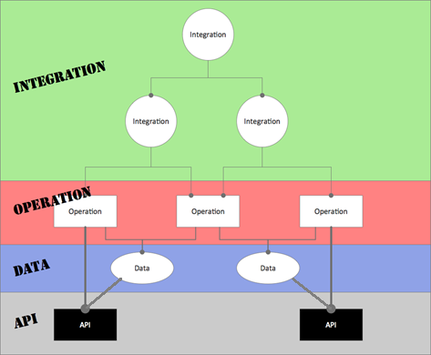
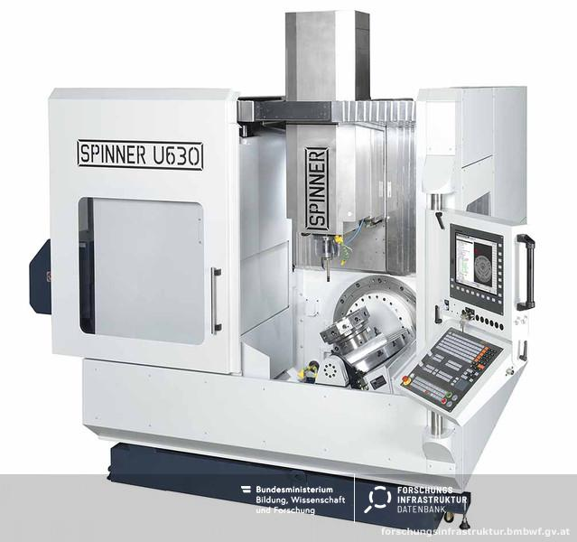

Dieses Zitat von Ralf Westphal ist für mich wesentlich, weil sich genau das immer wieder in meiner Arbeit bestätigt hat.
Ziel des IODA-Ansatzes ist es daher, diese funktionalen Abhängikeiten zwischen einzelnen Klassen und Bereichen in der Software zu regeln und zu minimieren. Daraus ergeben sich dann weitere Vorteile.
Ralf Westphal hat um 2015 herum IODA entwickelt/erfunden, um diese Funktionalen Abhängigkeiten zu eliminieren oder zumindest auf das notwendige Minimum zu beschränken.
Hier der Link auf seinen Artikel.
Zusammenfassung des IODA Ansatzes als Zitat aus dem Artikel:
So entsteht Software als Summe von Prozessen, deren Schritte in Operationen implementiert sind, die Daten konsumieren und produzieren unter Zuhilfenahme von APIs.
Für alle, die nicht den gesamten Artikel lesen möchten, hier eine sehr kurze Einführung:
IODA teilt alle Klassen in die Typen
ein. Zugriff ist nur von "Oben nach Unten" erlaubt.
Integratoren dürfen jeden anderen Klassentyp aufrufen, enthalten aber keine Logik.
Operationen dürfen nur Daten verwenden und manipulieren sowie die API aufrufen. Sie dürfen keine anderen Operationen oder gar Integratoren aufrufen. Sie enthalten als einzige Klassen (komplexere) Logik. Daraus folgt auch, dass Operationen direkt keine IO-Operationen aufrufen dürfen.
Daten beschäftigen sich nur mit sich selbst, ihren Kindern, Enkeln usw. Außerhalb der Familie ist nur der Zugriff auf das API erlaubt.
Das API hat keinen Zugriff auf Integratoren, Operationen oder Datenklassen, es ist wie eine Standard-Library des Entwicklungs-Systems zu betrachten und zu behandeln.
Das API darf aber niedriger gelegene APIs aufrufen, z.B. Standard-Libraries des Entwicklungs-Systems.
Die Operationen mit IO werden von den Operationen ohne IO getrennt und idealerweise in verschiedenen Libraries abgelegt.
Ruft eine Operation über die API IO-Operationen (der API) auf, so wird sie als IO-Operation gewertet. Dazu gehören z.B. Schreib- und Lesezugriffe auf Datenbanken, Dateien, die Konsole, Web-Services oder auch in Form-Elemente wie Labels, Text-Boxen und Textfelder.
IO-Operationen sollten nur Logik enthalten, die der Bedienung der IO-Funktionalität dienen, und selbst keine weiterführende Verarbeitungslogik enthalten.
Einer Verarbeitungs-Operation werden üblicherweise sämtliche Daten als Instanzen von Datenklassen beim Aufruf übergeben. Es werden von der Operation keinerlei weitere Daten von irgendwoher beschafft oder irgendwohin abgelegt. Die Ergebnisse der Verarbeitung werden als Instanzen von Datenklassen zurückgeliefert.
In einer Fabrik werden Holzrohlinge mit Sägen oder komplexen 5-Achs-Fräs-Maschinen verarbeitet.
Der Rohling wird von einem Mitarbeiter im Lager ausgesucht und dann in einer Gitterbox gemeinsam mit anderen Rohlingen in die Fabrikhalle gefahren. Das ist eine IO-Operation.
Die Integratoren führen dann den weiteren Materialfluss durch und liefern das Holz-Werkstück zuerst zur maschinellen Säge und danach zu einer anderen Maschine, einem 5-Achs-Fräser.
Diese Maschinen bilden die Operationen,
und die Holzwerkstücke die Daten.
Die Stromversorgung kann als API interpretiert werden, auf das auch die Operatoren Zugriff haben.
Wenn aus dem Werkstück ein geschwungener Handlauf eines Treppengeländers entstanden ist,
kann dieser von der Versandabteilung verpackt und verschickt werden. Die Versandabteilung bildet damit einen weiteren Teil der IO-Funktionalität ab.
Als weitere Variante einer Operation kann ein Teil auch in manuellen Arbeitsschritten erstellt werden. Dazu werden dem Handwerker Holz und Schrauben geliefert.
Der Arbeiter (Operator) verwendet nur Standard-Werkzeuge (aus der API): Zuerst eine Stichsäge, dann eine Bohrmaschine und zum Schluss einen Akkuschrauber.
Operatoren sollen sich ja selbst keine Daten beschaffen. Einen Sonderfall bildet der Aufruf einer Klasse, die Daten zurückliefert, aus einem Operator heraus.
Der zweite Sonderfall ist der - indirekte - Aufruf einer anderen Operation zur Weiterverarbeitung, z.B. innerhalb einer Schleife, die Daten aus einer Datenbanktabelle liest.
Das kann der Beschleunigung dienen oder dazu, den belegten Speicher möglichst klein zu halten. Müssen z.B. 5 000 000 Datensätze verdichtet werden, kann man so vermeiden, dass erst Alles geladen werden muss, um es danach der Operation in einer großen Liste zu übergeben. Denn die IO-Operation darf ja die Verarbeitungs-Operation nicht selbst aufrufen.
Hier sollte eine möglichst einfache Schnittstelle verwendet werden, die vor allem keinerlei Rückschlüsse darüber liefert, woher diese Daten stammen.
Werden die Daten einfach der Reihe nach verarbeitet, kann eine anonyme Funktion (Lambda-Funktion) oder auch ein Closure verwendet werden. Diese bilden dann einen "Mikro-Integrator", der zwischen den beiden Operationen sitzt und diese verbindet. Somit wird die Aufrufregel
nicht verletzt, wenn die DB-IO-Klasse in einer Schleife jeweils das Closure aufruft und ihm die Daten übergibt. Das Closure (oder die Anonyme Funktion) wird dabei von außen hereingegeben und innerhalb der Schleife nur aufgerufen. Somit gibt es keinerlei Abhängigkeiten zwischen den beiden Operations-Klassen, sie befolgen das Prinzip der gegenseitigen Nicht-Beachtung.
Muss über die Daten navigiert werden, kann zum Beispiel das Iterator-Pattern verwendet werden.
Closures, Anonyme Funktionen sowie Iteratoren entstammen einer API, sie dürfen somit von Operationen aufgerufen werden.
Operationen können sehr komplex sein, z.B. wie eine 5-Achs-Fräsmaschine:
Wie komplex eine Operation auch immer ist, nach außen ist sie nur eine Operation.
Doch im Inneren kann eine Operation wieder aus Integratoren, Operationen und Daten bestehen. Diese können als eigene Klassen oder nur als Methoden und einfache Datentypen realisiert sein. Das ist jedoch für die Sicht von Außen nicht relevant.
Ein weiteres Beispiel für eine Hülle um eine komplexe Operation bildet ein Heizungsraum, der durch eine abgeschlossene Brandschutztür gesichert ist. Das einzige Interface ist nur ein Notschalter neben der Tür, wenn man die Tür nicht öffnen kann, weil man nicht im Besitz des Schlüssels ist.
Im Normalbetrieb läuft die Heizung völlig selbstständig, es besteht somit auch kein Grund, den Heizungskeller zu betreten. Was sich innerhalb der Hülle (des Heizungsraumes) des Objekts befindet, bleibt dem Aufrufer (Hausbewohner) verborgen. Nur für Fehlerbehebung oder Wartung der Heizung wird die Tür aufgeschlossen, damit der Hausmeister oder der Techniker Zugang zur Heizung hat.
In den Heizungskeller führen Stromkabel, Wasserleitungen für Frischwasser, Gasleitungen und Heizungsrohre. Heraus führen Heizungsrohre, Warmwasserrohre und der Kamin zur Ableitung der Verbrennungsgase. Doch das muss der Hausbewohner gar nicht wissen. Er dreht einfach nur den Wasserhahn auf oder stellt in seiner Wohnung das Termostat für die Heizung ein.
Mit IODA kann man sich dieser idealen Welt nun auch in der Software-Entwicklung sehr stark annähern.